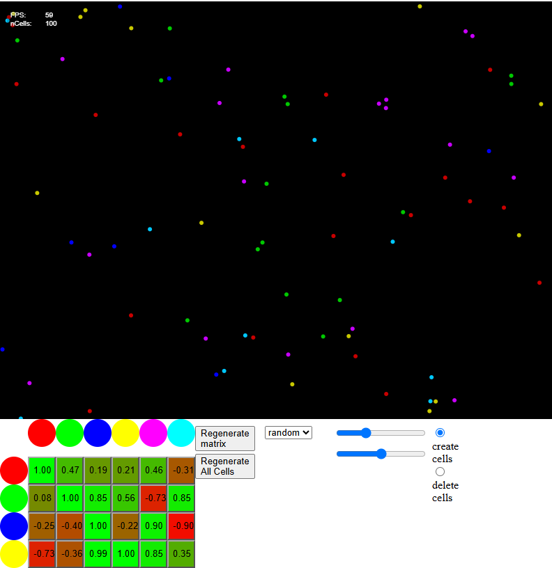
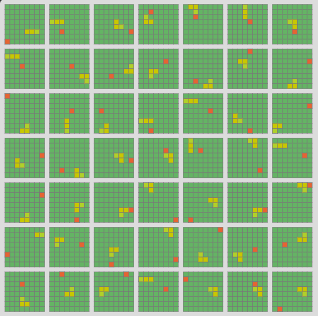
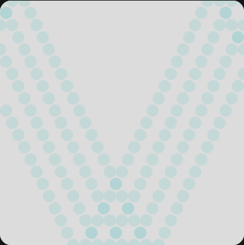
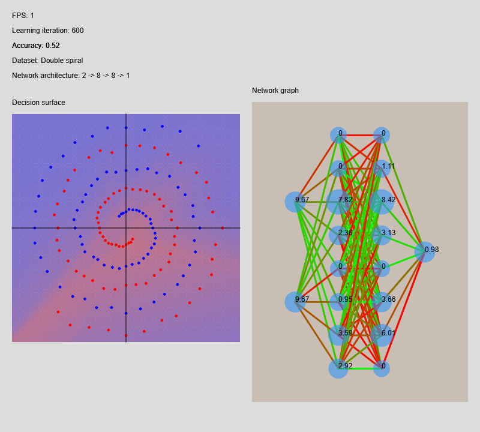
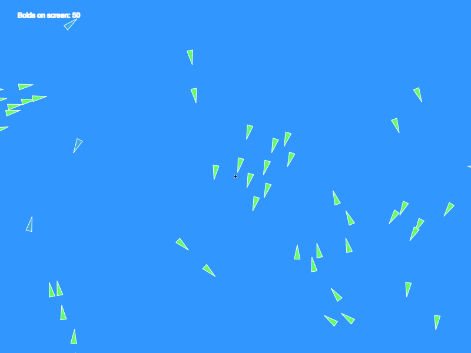

01 / Mesterséges életParticle Life
Vonzás, taszítás és színes részecskék. Egyszerű szabályokból összetett viselkedés.
Kipróbálom (új lapon)A műhelyből
Válassz egy kísérletet. A demók új lapon nyílnak meg, a gyűjtemény itt megvár.

01 / Mesterséges életVonzás, taszítás és színes részecskék. Egyszerű szabályokból összetett viselkedés.
Kipróbálom (új lapon)
02 / Tanuló algoritmusokA klasszikus játék, egy kis csavarral: ezúttal nem te játszol, hanem az algoritmus tanul.
Kipróbálom (új lapon)
03 / Mozgás & fizikaEgy labda, egy játéktér és a mozgás öröme. Az első lépés a szimulációk világába.
Kipróbálom (új lapon)
04 / Neural NetworksExplore three classification data sets while tuning a neural network and comparing its decision surface with the network graph.
Explore (opens in a new tab)
05 / FlockingExplore flocking with live steering controls. Move the follow point, add boids, and introduce rocks or chasers.
Explore (opens in a new tab)A műhely nem áll meg.Új ötleteknek mindig van hely.
A kód a GitHubon